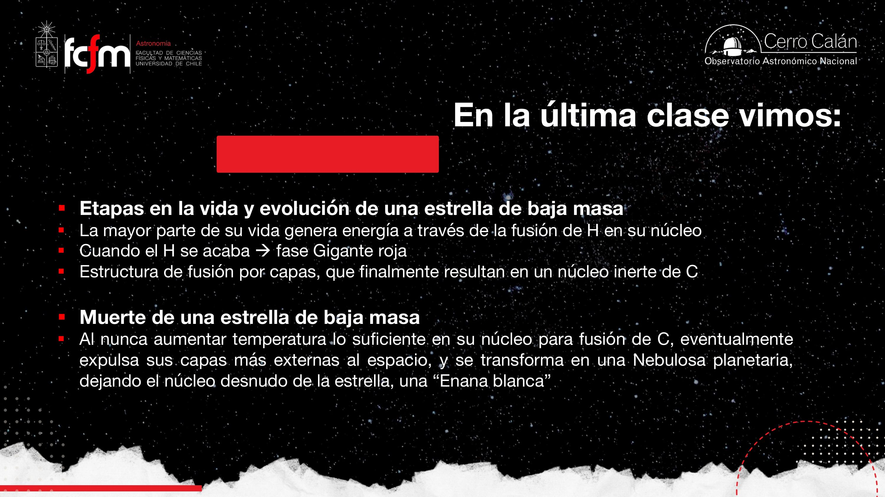
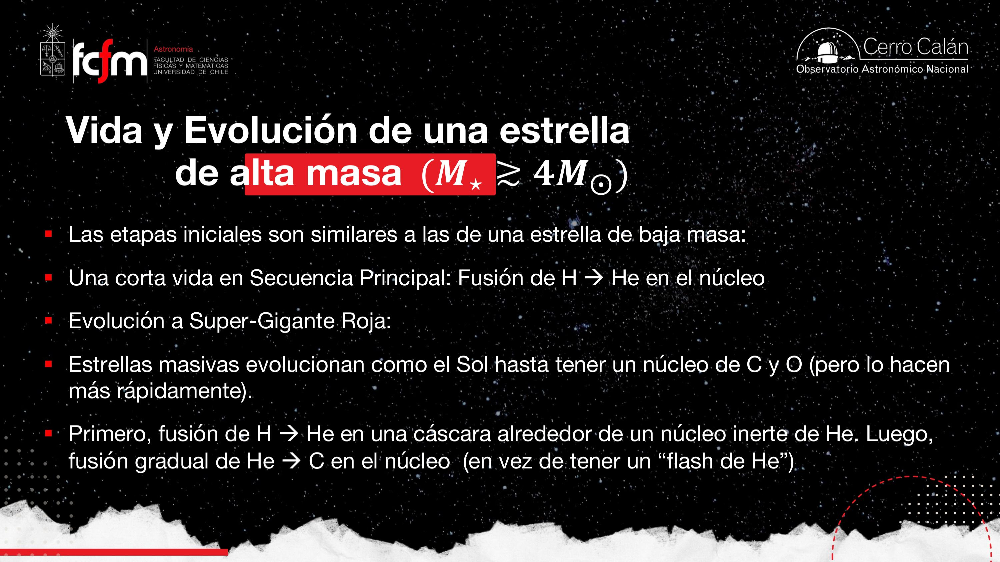
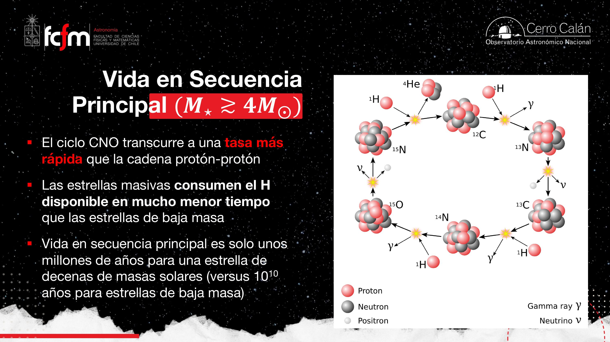
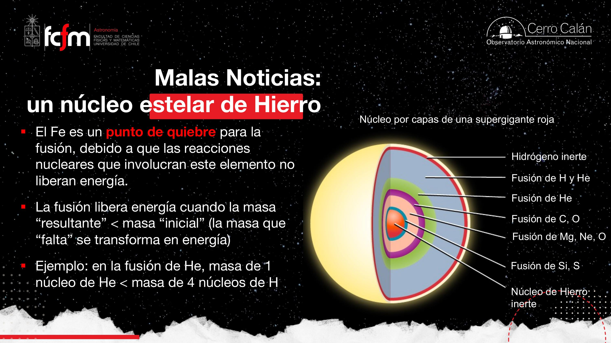
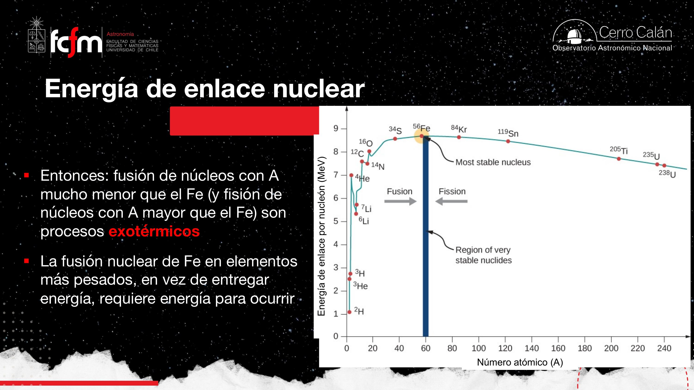
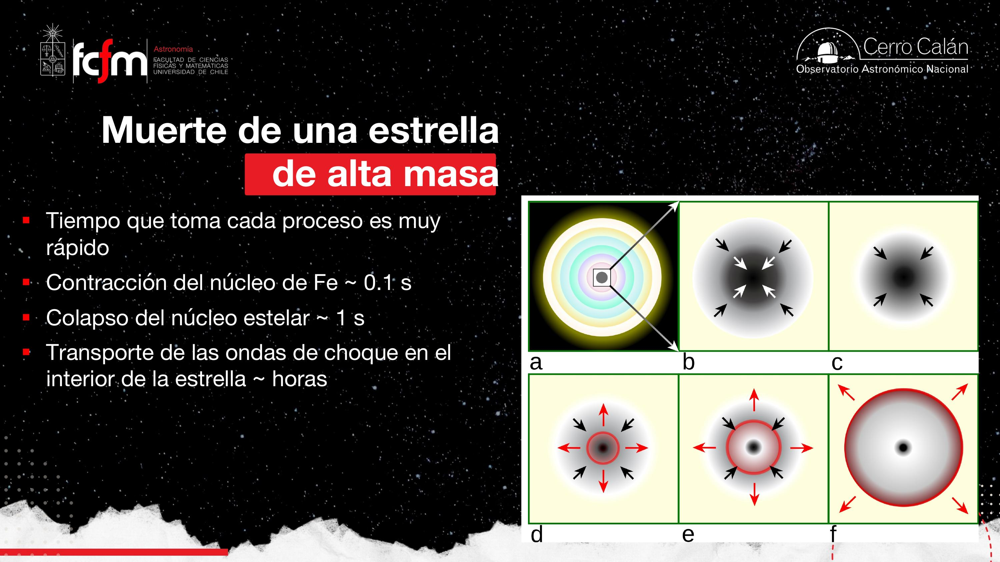

Evolución de Alta Masa
De la secuencia principal breve al ciclo CNO, la fusión por capas hasta el hierro, el colapso del núcleo y la explosión de supernova que enriquece el universo con elementos pesados.
La clase pasada cerró el capítulo de las estrellas de baja masa: agotan el hidrógeno, pasan por gigante roja, expulsan capas externas y dejan una enana blanca de carbono y oxígeno. Hoy abrimos el otro extremo: estrellas que viven poco, queman combustible a tasas enormes, alcanzan temperaturas de cientos de millones de kelvin y terminan en supernovas. El hilo conductor es la misma física de equilibrio hidrostático, pero el desenlace es radicalmente distinto.
Recapitulación: estrellas de baja masa
El punto de partida de la clase de hoy.
En la secuencia principal, una estrella como el Sol fusiona hidrógeno → helio en el núcleo. Cuando el H se agota, el núcleo de helio se contrae, sube la temperatura y la estrella se expande a gigante roja. La fusión continúa por capas: una cáscara de H fusionando alrededor de un núcleo inerte de He.
En baja masa el camino se detiene en el carbono: no hay temperatura ni densidad suficientes para fusionar C en el núcleo. Las capas externas se expulsan → nebulosa planetaria → queda un núcleo compacto de C/O: la enana blanca, sostenida por presión degenerada de electrones (tema del «cementerio estelar», clases siguientes).


Laura comparó la vida estelar con un presupuesto: si tienes poca «plata» (masa), la gastas despacio; si tienes mucha, la quemas en poco tiempo. Con la relación de clase 1 ( en MS), el tiempo de vida escala como : duplicar la masa reduce la vida en un factor ~8.
Umbral de masa ≈ 4 M☉
No es un corte afilado, sino un gradiente.
La separación entre evolución «solar» y «masiva» no ocurre exactamente en 4 masas solares, pero ese valor es un umbral útil (): por encima, la estrella alcanza temperaturas y densidades que permiten fusionar elementos cada vez más pesados y seguir generando energía mucho después del agotamiento del hidrógeno.
- < ~4 M☉: núcleo final de C/O; enana blanca; nebulosa planetaria.
- > ~4 M☉: puede avanzar hasta O, Si, Fe; supergigante; muerte en supernova Tipo II.


Una estrella de 10 M☉ vive ~10 millones de años en secuencia principal; una de 30 M☉, ~2 millones. El Sol: ~1010 años. La diferencia son varios órdenes de magnitud — pensar en escalas logarítmicas ayuda a no perderse.
Supergigantes y pérdida dramática de masa
No son «gigantes»: son otro régimen de tamaño.
Las estrellas masivas salen rápido de la secuencia principal y entran en la fase de supergigante roja (no solo «gigante»). La expansión puede llevar el radio hasta ~5 UA — del orden de la órbita de Júpiter. En esta fase dominan vientos estelares intensos y episodios de eyección masiva de material (outbursts).

El equilibrio hidrostático se mantiene mientras haya fusión que aporte temperatura y presión de radiación. El problema llega cuando el combustible del núcleo se agota en la etapa más pesada posible: el hierro.
Ciclo CNO vs cadena protón–protón
Dos vías para H → He; dominan en distinto régimen.
En baja masa domina la cadena protón–protón (pp): dos protones se fusionan paso a paso hasta formar 4He, sin necesitar núcleos pesados como catalizadores. En alta masa domina el ciclo CNO (carbono–nitrógeno–oxígeno): C, N y O actúan como catalizadores — participan en las reacciones pero se regeneran al cerrar el ciclo.


¿Por qué CNO es más eficiente en alta masa?
A altísima temperatura y densidad, la tasa de reacciones del ciclo CNO supera por órdenes de magnitud a la pp. En el Sol, por cada millón de fotones vía pp hay solo unos pocos vía CNO; en una estrella de 20 M☉ la proporción se invierte. Ambas cadenas existen en ambos tipos de estrella; lo que cambia es cuál domina la luminosidad — tanto por tasa de fusión como por energía liberada por reacción.
La fusión requiere que los núcleos superen la barrera de Coulomb. A mayor temperatura, mayor velocidad térmica de los protones ⇒ mayor probabilidad de túnel cuántico hacia núcleos de C. Por eso CNO «enciende» solo donde T y ρ son altos. La cadena pp escala aproximadamente como ; el CNO, mucho más sensible a T (~ en el régimen relevante).
¿De dónde sale el carbono? Población III
El carbono catalizador no estaba en el Big Bang (solo H, He y trazas de Li). Proviene de generaciones estelares anteriores. Las primeras estrellas del universo — Población III — carecían de metales; probablemente usaron solo la cadena pp, con luminosidades que aún generan debate entre cosmólogos. En el universo actual, las trazas de C/N/O (~2% de la masa) bastan para alimentar el CNO.
«Somos polvo de estrellas»: el C y el N que permiten el ciclo CNO hoy fueron creados en generaciones previas. Sin nucleosíntesis estelar previa, las estrellas masivas actuales no podrían brillar como lo hacen.
Fusión por capas en estrellas masivas
Un núcleo del tamaño de una estrella normal dentro de un monstruo.
Tras agotar el H en el núcleo, la estrella masiva puede encender sucesivamente: He → C → O → Si → Fe, cada etapa en el núcleo con capas externas fusionando el elemento anterior. Las temperaturas centrales alcanzan ~600 millones K (frente a ~15 millones K para H en el Sol).

A diferencia de la baja masa, el flash de helio no es abrupto: la mayor masa permite comprimir el núcleo de He gradualmente hasta encender la fusión triple-α sin inestabilidad violenta.

Pico del hierro y energía de enlace
El «máximo» de estabilidad nuclear.
Cada fusión de elementos ligeros a más pesados libera energía porque el producto tiene menos masa que los reactantes (defecto de masa → ). La energía de enlace por nucleón B/A es la energía necesaria para descomponer un núcleo en nucleones libres; crece con el número atómico hasta un máximo en el hierro (Fe) y luego decrece.


En núcleos pequeños, la fuerza fuerte «gana» a la repulsión entre protones al agregar nucleones. En núcleos muy grandes, la repulsión electromagnética entre protones en la superficie empieza a competir. El hierro es el punto de balance óptimo: el núcleo más estable del período.
Cuando el núcleo es de hierro, ya no hay fusión que libere energía. Sin fuente térmica, la presión de radiación cae y la gravedad gana → comienza el colapso.
Colapso del núcleo y supernova Tipo II
Rebote por degeneración de neutrones.
- El núcleo de Fe deja de generar energía → pierde soporte térmico.
- El núcleo colapsa en fracciones de segundo hasta densidades de núcleo atómico (~4×1017 g/cm3).
- La presión degenerada de neutrones frena el colapso (análogo a electrones en enana blanca, pero con partículas más masivas).
- El material exterior en caída libre rebota contra el núcleo compacto → onda de choque.
- La onda atraviesa la estrella, expulsa las capas → supernova Tipo II (colapso de núcleo de estrella masiva).


Laura ilustró la degeneración: una sala con asientos ocupados no acepta más gente en el mismo lugar — hay una «presión» que resiste la compresión. Los neutrones en el remanente central hacen lo mismo a densidades extremas.
En la onda de choque se inyecta energía suficiente para crear elementos más pesados que el hierro (Au, Pt, U, etc.) y dispersar todo el material procesado al medio interestelar.
Tiempos y energía liberada
Instantáneo frente a millones de años de vida.
| Etapa | Escala de tiempo |
|---|---|
| Contracción del núcleo de Fe | ~0,1 s |
| Colapso del material exterior | ~1 s |
| Propagación de la onda de choque | Horas (atravesar una supergigante de ~5 UA) |
| Vida total en secuencia principal (10 M☉) | ~107 años |

La energía liberada en la supernova es del orden de 1046 J. No proviene principalmente de reacciones nucleares en ese instante, sino de la energía gravitacional convertida en cinética del rebote. Para comparar: la luminosidad solar es ~3,9×1026 W; integrada en ~1010 años da ~1044 J — la supernova libera ~100 veces la energía total radiada por el Sol en toda su vida, en un instante.

El pico de luminosidad es un evento breve pero enorme en amplitud — como un pulso de gran relación señal/ruido en un detector lejano. La curva de luz muestra un salto abrupto (eje logarítmico) seguido de decaimiento en meses. Por eso las supernovas funcionan como faros cosmológicos.
Nucleosíntesis y evidencia observacional
«Somos polvo de estrellas» con datos.

Evidencias clave
- Metalicidad: estrellas viejas (baja masa, formadas al inicio de la Galaxia) tienen pocos metales; las jóvenes, muchos más — el gas se «enriqueció» con cada generación.
- Abundancia de números pares: C, O, Si son más abundantes que elementos de número impar vecino, porque la fusión estelar prefiere combinar pares de nucleones (proceso α).
- SN 1987A: supernova observada en la Gran Nube de Magallanes (23 feb 1987); remanente seguido décadas (p. ej. JWST). Confirmó la teoría en tiempo real.
- Supernovas como faros: detectadas en galaxias a alto redshift; base del Nobel de expansión acelerada del universo (junto con supernovas Ia).


Remanentes: estrellas de neutrones, pulsares, agujeros negros; supernovas Tipo Ia desde enanas blancas en binarias; novas y el «zoológico» de sistemas dobles. La clase de hoy cierra la evolución masiva hasta la explosión.
Explorar conceptos
Widgets para visualizar dominancia CNO/pp y el pico del hierro.
Conceptos clave
Tabla de repaso rápido.
| Concepto | Qué es / valor | Por qué importa |
|---|---|---|
| Umbral ~4 M☉ | Gradiente, no corte exacto | Marca dónde puede continuar la fusión más allá del C |
| Supergigante | Radios ~ hasta 5 UA; vientos intensos | Fase post-MS masiva; Eta Carinae como ejemplo |
| Ciclo CNO | C,N,O catalizan H→He | Domina en alta masa; requiere metales de generaciones previas |
| Cadena pp | H→He sin catalizador pesado | Domina en baja masa y en Población III |
| Población III | Primeras estrellas, sin metales | Solo pp disponible; debate sobre luminosidades |
| Fusión por capas | H, He, C, O, Si → Fe | Estructura «cebolla» del núcleo masivo |
| Pico del Fe | Máximo B/A (~8,8 MeV/nucleón) | Fusión más allá de Fe consume energía |
| Colapso + rebote | ~0,1 s Fe; ~1 s colapso; horas la onda | Mecanismo de SN II; remanente de neutrones |
| Energía SN | ~1046 J (gravitacional) | ~100× energía total radiada por el Sol en su vida |
| Nucleosíntesis | BB, estrellas, SN, binarias | Explica composición del Sol, la Tierra y nosotros |
| SN 1987A | SN II en LMC (1987) | Prueba observacional directa de la teoría |
Exámenes de práctica
10 exámenes de 5 preguntas (3 de alternativas autocorregibles + 2 de respuesta escrita).